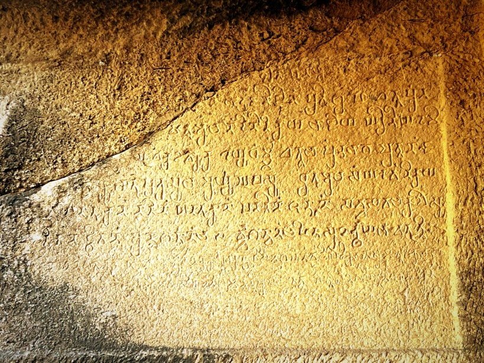
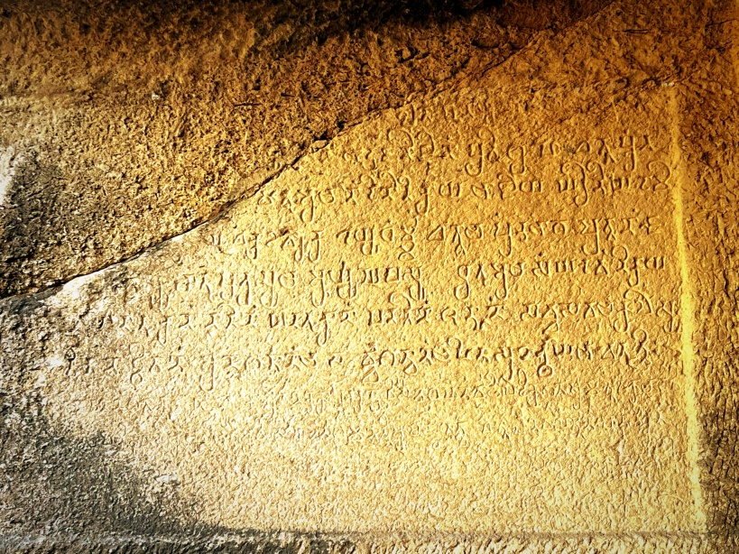
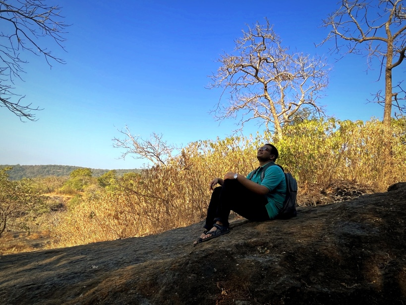
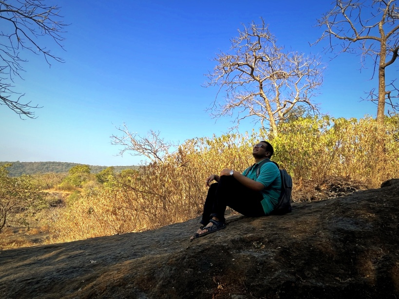

Sanjay Gandhi National Park & Kanheri caves
After completing end-sem, it was time to do a new adventure!
These roads reminds me of IIT KGP
We saw some deer at the distant
Long walks are my favourite
Secluded long roads
Sachin looks happy too... just not sure when wild animals might pounce!
 Trees that have lost leaves
My face after reading the sign, be-aware of wild animals.
Trees that have lost leaves
My face after reading the sign, be-aware of wild animals.
 More roads, already completing about 10 kms walk.
The true definition of light-green
After walking about 15 kms, we finally arrive at Kanheri caves
We climed up, there were about 108 caves
Mandatory selfie

Some antique writings
More roads, already completing about 10 kms walk.
The true definition of light-green
After walking about 15 kms, we finally arrive at Kanheri caves
We climed up, there were about 108 caves
Mandatory selfie

Some antique writings
 The only drawing that exists in these caves, about 1500 years old.
The only drawing that exists in these caves, about 1500 years old.
 
Super tired, and time for return
The top of the mountains, and it was time to return hostel!

Super tired, and time for return
The top of the mountains, and it was time to return hostel!